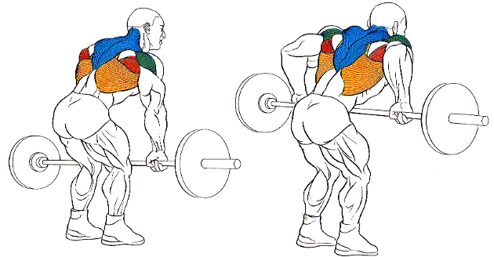
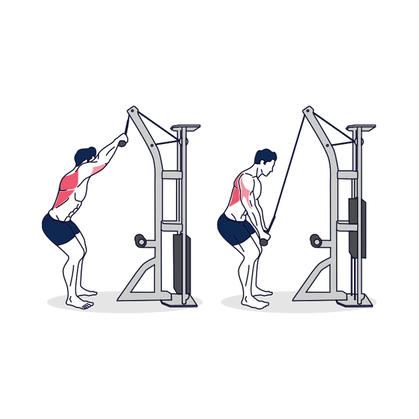
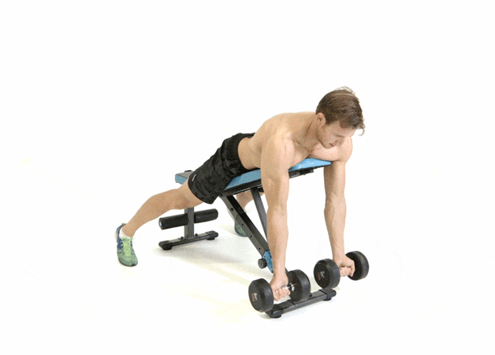

| Espalda y bíceps |
GRAFICO |
MUSCULOS INVOLUCRADOS |
Remo con barra (3 series de 12 repeticiones)
TECNICA |
 |
-deltoides posterios
-Redondo mayor
-Redondo menor
-Trapecio(inferior y medio)
-Infra espinoso
-Dorsal ancho
-Braquiales |
Dominadas asistidas con máquina o banda (3 series de 12 repeticiones)
TECNICA
|
 |
-Trapecio
-Romboides
-Pectoral mayor y menor
-Deltoides
-Infraespinoso
-Dorsal ancho (el gran protagonista)
-Redondo mayor
-Subescapular. |
Remo con mancuernas (3 series de 12 repeticiones)
TECNICA
|
 |
-dorsal ancho
-trapecio
-redondo mayor
-deltoides
-romboides |
Pull-downs en polea alta (3 series de 12 repeticiones)
TECNICA
|
 |
-dorsal ancho
-trapecio
-romboides
-redondos
-bíceps
-menor medida el pectoral |
Curl araña con mancuernas (3 series de 12 repeticiones)
TECNICA
|
 |
-cabeza corta del bíceps |
Curl de biceps con marcuernas en banco inclinado (3 series de 12 repeticiones)
TECNICA
|
 |
-Cabeza larga del biceps |
Curl de martillo con mancuernas (3 series de 12 repeticiones
TECNICA
|
|
-zona central del bíceps
-antebrazo |